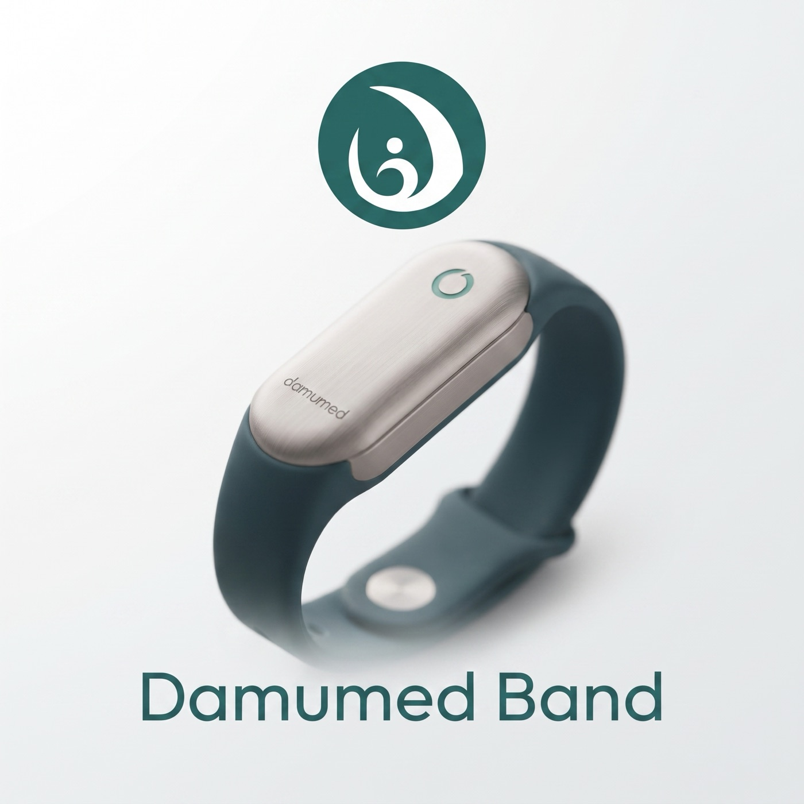

Damumed Band — браслет без экрана для личного контроля показателей здоровья в приложении Damumed. Продажи через полгода после контракта, по цене ниже популярных фитнес-браслетов.

Браслет без экрана продаётся как устройство для личного контроля показателей: сон, пульс, кислород в крови, активность — в привычном приложении Damumed, где уже 5,3 млн пациентов.
Между контрактом и первой продажей остаются только образцы, производство и доставка: продажи начинаются с шестого месяца. Так продаются все браслеты на Kaspi — Xiaomi, Huawei, Samsung: устройства общего благополучия, без регистрации, и это законно ровно до тех пор, пока производитель не заявляет медицинское назначение.
Формула позиционирования — «знай свою норму». Устройство помогает человеку видеть собственные тренды и вовремя замечать отклонения; что с ними делать — человек решает сам, в том числе показав данные своему врачу на приёме. Единственное, чего нет ни у одного конкурента: показатели живут в том же приложении, где медкарта, запись к врачу и лекарства.
Раз ценность — показатели в привычном приложении, железо не должно быть барьером: цена встаёт ниже якорных моделей полки, и экономика выдерживает её с большим запасом.
| Кто платит | За что | Цена | Пояснение |
|---|---|---|---|
| Человек покупает для себя |
Браслет — один раз | 14 990 ₸ | в рассрочку на год — 1 250 ₸/мес; на треть ниже Xiaomi Smart Band 10 (21 989 ₸) |
| Подписка в приложении — по желанию | 690 ₸/мес | длинные тренды, отчёты за период, расширенные объяснения; базовые функции бесплатны |
Полка выглядит так: дешевле нас только Xiaomi Band 9 Active (11 991 ₸) и безымянные браслеты; дороже — Huawei Band 10 (16 890 ₸) и Xiaomi Band 10 (21 989 ₸). По железу и бренду мы это сравнение проигрываем — выигрываем ценой и интеграцией с Damumed. Продажа встраивается прямо в приложение: баннер в разделе здоровья, оплата, доставка — и комиссия канала около нуля против 13–19% на Kaspi.
Себестоимость устройства на складе — 4 026 ₸, маржа после комиссии канала — около 8 900 ₸, продажи начинаются с шестого месяца. Отсюда результат.
| Строка | Значение |
|---|---|
| Выручка от устройств (за вычетом комиссии) | 130,4 млн ₸ |
| Выручка от подписок за горизонт | 27,9 млн ₸ |
| Партия + образцы + облако и поддержка за 24 мес | −79,3 млн ₸ |
| Результат к 24-му месяцу | +79,1 млн ₸ |
| Точка окупаемости | месяц 11 |
| Подписочная выручка в устойчивом режиме | 2,07 млн ₸/мес |
| Продано из 10 000 | Результат | Окупаемость |
|---|---|---|
| 100% — базовый расчёт | +79,1 млн ₸ | месяц 11 |
| 70% | +31,6 млн ₸ | месяц 13 |
| 50% — точка безубыточности | ≈ 0 | месяц 17 |
| меньше половины | убыток | за горизонтом |
| Сценарий | Результат |
|---|---|
| База | +79,1 |
| 70% розница + 30% поликлиники (закуп 6 900 ₸; рисковый трек — раздел 04) | +52,3 |
| Продажи растянулись на 18 месяцев вместо 12 | +72,9 |
| Закупочная цена $10 вместо $7,5 | +67,2 |
| Розничная цена 12 990 ₸ вместо 14 990 | +61,7 |
| Предельная закупочная цена | в плюсе до цены выше $17 |
Честные оговорки расчёта: маркетинговый бюджет принят нулевым (ставка на бесплатный канал приложения); НДС при импорте без удостоверения — 16% вместо льготных 5% (зачётный, но замораживает ~6,4 млн ₸ в обороте); сегмент корпораций и страховых в расчёт не включён — это резерв сверх плана.
Продукт розничный: покупателя описывают не диагнозы, а сегменты и мотивы покупки. Достижимая доля за 2–3 года оценивается в 15–35 тысяч устройств; партия 10 000 — нижняя граница.
| Сегмент | Мотив покупки | Что важно в продукте |
|---|---|---|
| Самоконтроль при хронических состояниях | видеть сон, пульс, кислород рядом с дневником давления и лекарств; показать врачу на приёме | ручной дневник, отчёт за период, простые объяснения |
| Взрослые дети — родителям | спокойствие: «как спал, как пульс» без звонков-допросов | совместный доступ с согласия, крупный шрифт, казахский язык |
| Аудитория здорового образа жизни | сон и восстановление без экрана | базовые функции бесплатны, честная цена |
| Корпорации и страховые (резерв) | программы благополучия сотрудников | партии со скидкой, обезличенная статистика |
| Поликлиники — рисковый трек ⚠️ | браслеты пациентам в рамках программ приверженности: напоминания, дневник, отчёт к приёму | закуп 6 900 ₸ или рассрочка 640 ₸/мес; официального наблюдения нет |
Браслет без экрана — значит продукт целиком живёт в приложении. Новый раздел «Показатели здоровья» внутри «Моих данных» Damumed: личные коридоры вместо популяционных норм, честная калибровка первой недели, понятные объяснения на русском и казахском.
| Что в разделе | Чего в нём нет — и почему | Фирменные сценарии |
|---|---|---|
| личный коридор, сон, ритм и пульс, дневник давления и веса; ИИ: качество сигнала, умные напоминания, объяснения показателей | панели врача и автоматических тревог нет: данные несертифицированного устройства не принимаются в контур дистанционного наблюдения (раздел 06); диагнозов и медицинских выводов нет — граница назначения | «Отчёт для врача» руками пациента (документ за 30 дней); совместный доступ для семьи; дневник самочувствия с ручным вводом |
Без удостоверения проект жив ровно до тех пор, пока не пересекает две границы: границу назначения и границу дистанционных медицинских услуг.
Граница первая — назначение. Статус устройства определяется не железом, а заявленным назначением (Рекомендация Коллегии ЕЭК от 12.11.2018 № 25, пункт 5). Пока формулировки — про самочувствие и активность, регистрация не нужна: так продаются все Xiaomi и Huawei на Kaspi. Но слова «диагностика», «выявление аритмии», «контроль заболевания», «врач наблюдает» в упаковке, приложении или рекламе превращают браслет в незарегистрированное медизделие: изъятие из обращения, административная ответственность, удар по бренду Damumed.
Граница вторая — дистанционные медуслуги. Пункт 5 Требований (приказ Минздрава № ҚР ДСМ-39, действующая редакция в силе с 01.09.2026) допускает автоматическое получение данных врачом только «при использовании носимых медицинских устройств, сертифицированных согласно пункту 7 статьи 60 Кодекса и имеющих функции передачи данных». Пункт 7 статьи 60 Кодекса: «Носимые медицинские устройства подлежат сертификации в соответствии с законодательством Республики Казахстан».
| Следствие | Что это значит |
|---|---|
| Автоматический контур закрыт | показатели несертифицированного браслета нельзя принимать в медицинские цифровые системы; панели врача нет |
| Мотивация поликлиники резко ослаблена | сам закуп браслетов не запрещён, но наблюдение не засчитывается, программа управления заболеваниями с данными не работает, стимулирующий компонент не задействуется — трек возможен только как рисковая опция (раздел 04) |
| Ручной ввод — законен | тот же пункт 5 прямо разрешает ручной ввод данных самим пациентом; сценарий «покажите данные врачу» — честный и легальный |
Регистрационных процедур в этом варианте нет вовсе: ни досье, ни экспертизы, ни медицинской маркировки. НДС при импорте — базовые 16% (льготная ставка 5% действует только для медизделий с удостоверением), а код товарной номенклатуры без медицинского назначения может отличаться — предварительное решение Комитета госдоходов обязательно до контракта. Требования закона о персональных данных действуют независимо от статуса: хранение в Казахстане, данные напрямую нам, без облака производителя.
Проверено 12 контрактных заводов; фильтр номер один — полный доступ к данным без облака производителя. Сертификат медицинского качества ISO 13485 желателен, но не обязателен, поэтому короткий список открывают заводы с лучшей ценой и техникой.
| Кандидат | Почему подходит | Что проверить |
|---|---|---|
| Eternity (Guangdong) | самый глубокий профиль безэкранных браслетов; минимальная партия 500 штук — пилот за 6–7 тыс долларов; прозрачная цена $12,59 при 10 000 | состав комплекта разработчика на образцах; ISO 13485 — если держим путь к РУ |
| Wonlex (Шэньчжэнь) | лучшее железо выборки; комплект разработчика проверяем до контракта по публичному репозиторию | минимальная партия и цена не раскрыты |
| J-Style — на случай будущей регистрации | единственный с ISO 13485 и опытом медицинской регистрации: если позже решим регистрировать медизделие, завод менять не придётся | цена, вероятно, выше витринных |
Сроки: образцы 4–6 недель, серийная партия 8–12 недель после утверждения образца, доставка около 4 недель. От контракта до склада — 4–5 месяцев; старт продаж в расчёте — месяц 6.
У каждого риска есть ответ до заказа партии, а не после.
| Риск | Чем снимается |
|---|---|
| Розничный спрос не подтверждается — ключевой риск варианта | пилот 500 штук через Eternity до заказа 10 000; жёсткий критерий продолжения по продажам пилота и конверсии канала |
| Поликлиничный трек: слабая мотивация закупа и уязвимость при проверке | юридическое заключение о рамке закупа («программа приверженности»); два-три разговора с главными врачами; в базовый расчёт не включать |
| Маркетинг пересекает границу медизделия | санитарный словарь формулировок; юридическая вычитка упаковки, приложения и карточек магазинов до релиза |
| Завод не даёт доступ к данным или гонит их через своё облако | проверка комплекта разработчика до предоплаты; аудит сетевого трафика прошивки на стенде |
| Конкурент повторяет модель — барьера нет | скорость и канал: выйти первыми, занять полку в приложении; интеграцию с медкартой без Damumed не повторить |
| Код номенклатуры и пошлина отличаются от заложенных | предварительное классификационное решение Комитета госдоходов до контракта |
| Пациенты не носят браслет | метрика доли ночей с данными в пилоте; вариативность ремешков; напоминания |
Два пути на одном железе. Жирным в каждой строке выделен вариант, который по этому критерию сильнее.
| Критерий | С регистрацией (РУ) | Без регистрации |
|---|---|---|
| Старт продаж | месяц 16 | месяц 6 |
| Вложения | 58 млн ₸ | 43 млн ₸ |
| Результат к 24-му месяцу | +20 млн ₸ | +79 млн ₸ при проданной партии |
| Окупаемость | месяц 21 | месяц 11 |
| Каналы | поликлиники + розница | розница + поликлиники с оговоркой (рисковый трек) |
| Подстраховка спроса | закуп поликлиник — 70% партии | частичная, если рисковый трек состоится; безубыточность — 50% партии |
| Повторная выручка | 4,1 млн ₸/мес | 2,1 млн ₸/мес |
| Право говорить о медицине | да | нет — только язык благополучия |
| Исполнение приказа ДСМ-39 для поликлиник | да | нет |
| Барьер для конкурентов | 18 месяцев регистрации | нет |
| Запас по цене завода | до $11,5 | выше $17 |
| Главный риск | сроки и класс при регистрации | розничный спрос |
| Стратегическая позиция Damumed | уникальная ниша занята | ниша остаётся свободной |
Если верить в розничный спрос — вариант без регистрации сильнее по всем денежным метрикам: быстрее, дешевле, прибыльнее. Вся конструкция держится на одном непроверенном числе — конверсии канала Damumed. Если главная цель — стратегическая позиция (встроить Damumed в контур дистанционного наблюдения, занять пустую нишу, поставить барьер) — вариант с регистрацией без альтернатив.
Документы и расчёты именно этого варианта. Материалы варианта с регистрацией — на его странице.
Дата: 1 сентября 2026 г. Парный документ — резюме варианта А (запуск с регистрационным удостоверением); исследовательская база общая.
Выпускаем под брендом Damumed браслет без экрана (контрактный завод в Китае, партия около 10 000 штук) и продаём его в розницу как устройство для личного контроля показателей здоровья — без регистрации медицинского изделия. Показатели — сон, пульс, вариабельность ритма, кислород, температура кожи, активность — идут в раздел «Показатели здоровья» приложения Damumed. Продажи начинаются примерно через полгода после контракта.
1. Скорость: продажи с 6-го месяца против 16-го у варианта с регистрацией. 2. Вложения меньше на 15 млн ₸: 43 млн вместо 58. 3. Маржа с устройства около 8 900 ₸ — запас по цене завода практически неограничен (в плюсе до цены выше 17 долларов). 4. Живая проверка спроса и ношения за год до любых решений о регистрации.
1. Канал поликлиник урезан до рискового трека: по пункту 5 Требований приказа № ҚР ДСМ-39 в автоматический контур дистанционного наблюдения попадают только устройства, сертифицированные согласно пункту 7 статьи 60 Кодекса. Закупить браслеты поликлиника может (программы приверженности, закуп 6 900 ₸ или рассрочка), но наблюдение не засчитывается и стимулирующий компонент не работает — мотивация слабая, закуп юридически уязвим; трек — опция после юридического заключения, в базовый расчёт не включён (сценарий 70/30 даёт +52,3 млн ₸ против +79,1 у чисто розничного). 2. Права говорить о медицине нет — только язык благополучия; главный рекламный аргумент варианта А недоступен. 3. Барьера для конкурентов нет. 4. Весь проект зависит от розничного спроса: точка безубыточности — продать половину партии за два года.
1. Себестоимость на складе — 4 026 ₸ (та же). 2. Вложения: партия около 40 млн ₸ плюс образцы 3 млн. 3. Маржа с устройства после комиссии — около 8 900 ₸. 4. Подписка 690 ₸/мес, конверсия 30% — около 2,1 млн ₸ в месяц при распроданной партии. 5. Итог: окупаемость на 11-й месяц, результат к 24-му месяцу +79 млн ₸ — при условии, что партия продана за год. Продано 70% — +32 млн; 50% — ноль; меньше — убыток. 6. НДС при импорте 16% (льгота 5% только по удостоверению), зачётный.
Статус устройства определяется заявленным назначением (Рекомендация ЕЭК № 25): пока формулировки про самочувствие и активность — регистрация не нужна, это законно. Запрещены медицинские утверждения в упаковке, приложении и рекламе — юридическая вычитка всех текстов до релиза обязательна. Ручной сценарий «покажите данные врачу» законен: пункт 5 Требований прямо разрешает ручной ввод данных самим пациентом.
Те же 12 проверенных заводов и тот же главный фильтр — полный доступ к данным без облака производителя. Фавориты смещаются: Eternity (минимальная партия 500 штук — дешёвый пилот, прозрачные цены) и Wonlex (лучшее железо). J-Style остаётся выбором, если вариант Б — первый этап перед регистрацией: он один сохраняет путь к удостоверению без смены завода.
Ключевой вопрос — Б это самостоятельный путь или этап 1? Осторожная конструкция: пилот 500 штук (6–7 тыс долларов) для проверки спроса и ношения; выбор завода с системой качества; решение о регистрации — по данным пилота, не откладывая дольше двух-трёх месяцев после старта продаж. Это сохраняет скорость варианта Б и не отдаёт нишу варианта А конкурентам.